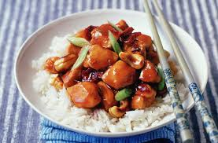
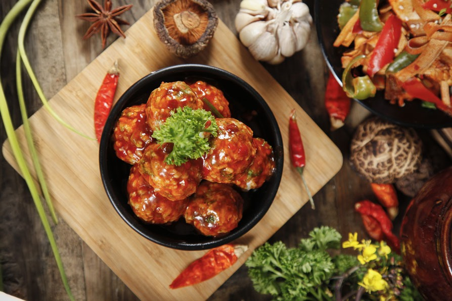
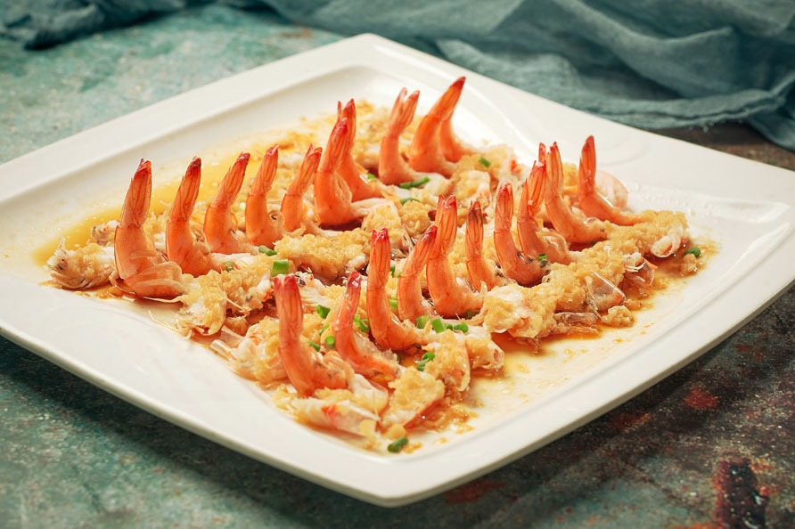
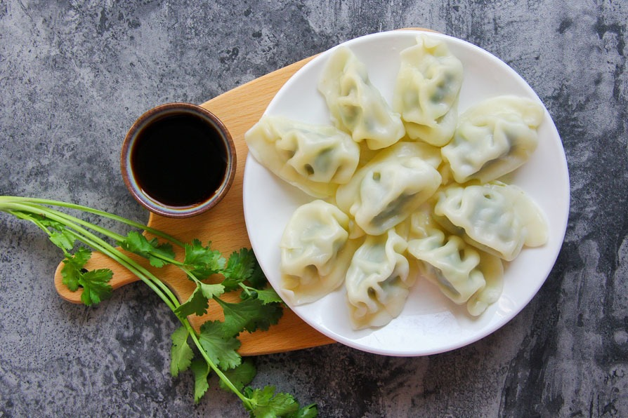

Stretching 3,100 miles (5,000 kilometers) from east to west and 3,400 miles (5,500 kilometers) from north to south, China is a large country with widely varying landscapes.With a population of 1.3 billion, China has more people than any other country on Earth. About a third of the population lives in cities. The rest of the people live in the country. Arts and crafts have a long history in China. Thousands of years ago the Chinese were some of the first people to use silk, jade, bronze, wood, and paper to make art. The artistic writing called calligraphy was invented in China.Much of China's modern beliefs and philosophies are based on the teachings of a government official who lived nearly 3,000 years ago. Kongfuzi, also known as Confucius, taught people the value of such things as morality, kindness, and education.
Chinese cuisine is an important part of Chinese culture, which includes cuisine originating from the diverse regions of China, as well as from Chinese people in other parts of the world. Because of the Chinese diaspora and historical power of the country, Chinese cuisine has influenced many other cuisines in Asia, with modifications made to cater to local palates. Chinese food staples such as rice, soy sauce, noodles, tea, and tofu, and utensils such as chopsticks and the wok, can now be found worldwide.
Hotpot is a dish to tell apart real Chinese food lovers. If you really appreciate hotpot rather than just ordering fired rice, chow mein, and dim sum all the time, you are truly a Chinese cuisine fan!The secret of whether a hotpot is good or not lies in the broth, in which all the meat slices and vegetables are cooked. Normally you get to choose your own broth flavor, such as mushroom, tomato, original, or spicy. But still, the flavor can be different according to the sauce you choose to go with the meat. There are hundreds of kinds: a classic one is peanut butter with smashed garlic and chopped onion dressed with sesame oil.
>
click on the image to know more about hotpot and its recipe
Sichuan Pork, actually, poached spicy slices of pork is a famous Sichuan cuisine dish.Rather than cooking pork by stir-frying or deep-frying, which consumes lots of oil and can very easily overcook the pork, it is boiled in water with a coating made from egg-white and starch to preserve its freshness and tenderness.The meaty broth is typical Sichuan cuisine, featuring a peppery and spicy taste. When eating, you’ll find each piece of meat contains abundant juices with a fresh and fragrant spicy aroma
click on the image to know more about Sichuan pork and its recipe
Braised pork balls in gravy are also known as “Chinese meatballs” (many of our clients call them this). If you like meatballs and spaghetti, you’ll probably appreciate Chinese meatballs as well. The super-smooth and flavory gravy is almost like a “drug sauce” keeping your taste buds wanting more and more. How many calories does it have? Trust me, you wouldn’t care at all!
click on the image to know more about Braised pork balls in gravy and its recipe
Shrimp with vermicelli and garlic is a dish not only favored by foreigners but also the Chinese younger generation in recent years as well.This steamed dish brings out the aroma of everything it has. The heavy garlic with a seafood sauce flavor blends with the freshness of juicy shrimp. The vermicelli at the bottom absorbs every single drip of tasty juice running down. Some Chinese yellow wine to capture the aroma and highlight the flavor is the secret to this delicacy.
click on the image to know more about Shrimp with Vermicelli and Garlic and its recipe
Dumplings consist of minced meat and chopped vegetables wrapped in a thin dough skin. With a long history of more than 1,800 years, dumplings are a traditional food widely popular in North China.Popular fillings are mince pork, diced shrimp, ground chicken, beef, and vegetables. They can be cooked by boiling, steaming, or frying. Dumplings are a traditional dish eaten on Chinese New Year’s Eve.
click on the image to know more about Shrimp with Vermicelli and Garlic and its recipe
Back to top